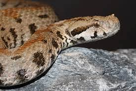
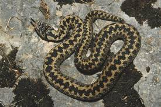
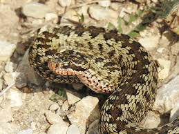
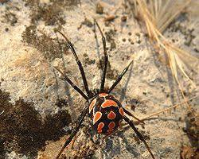
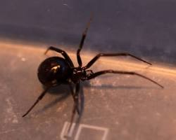
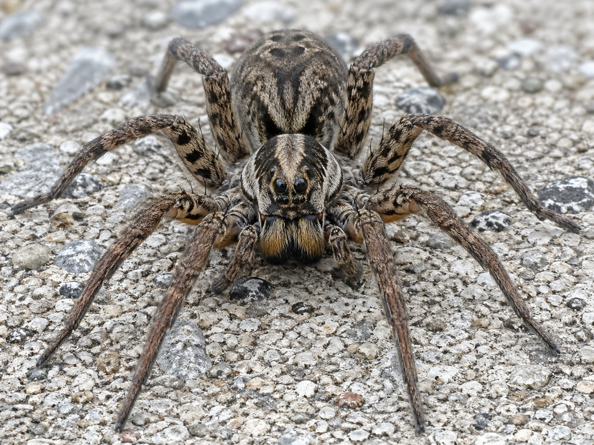
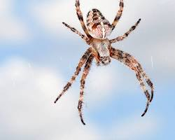
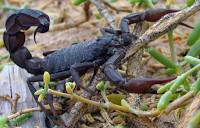
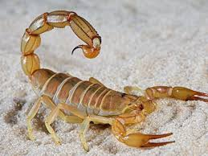
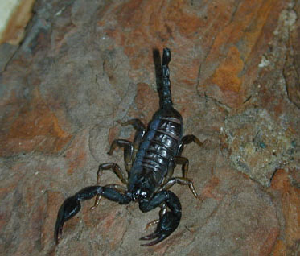

Բարև Ձեզ այսօր մենք կպատմենք հայկական թունավոր կենդանիների` օձերի, կարիճների և սարդերի մասին։ Նախագծի նպատակը այն է, որ դուք կարողանաք տարբերել թունավոր կենդանիներին, ոչ թունավորներից։ Տեղեկությունը կարդալուց հետո դուք կխաղաք մեր սարքած խաղը։ Նախագիծը կազմել են Սպարտակ Հայրապետյանը, Սարո Մխիթարյանը, Ալեքս Հովհանիսյանը և Մքայել Պայլանը։ Ծրագրի կոդավորմամբ զբաղվել է Սպարտակը, տեղեկությունը հավաքագրել է Ալեքսը և Սարոն, իսկ խաղի հարցերը պատրաստել է Միքայելը։ Ծրագրից օգտվելու համար հարկավոր է սեղմել էկրանի վերևի աջ անկյունում առկա երեք ձողերին։

կարիճի մասին տեղեկություն

օձի մասին տեղեկություն

սարդի մասին տեղեկություն

Գյուրզա

Հայկական Իժ

Դարևսկու Իժ

Տափաստանային Իժ

Սեվ Այր

Կեղծ Սեվ Այր

Մալաթիական Սարդ

Մեծ Խաչասարդ

Սեվ Հաստապոչ Կարիճ

Դեղին Կարիճ

Իտալական Կարիճ
Գյուրզան Հայաստանի ամենավտանգավոր և ամենախոշոր թունավոր օձն է:
Տեսքը: Մարմինը հաստ է, երկարությունը կարող է հասնել մինչև 2 մետրի: Գլուխը խիստ եռանկյունաձև է: Մեջքը մոխրագույն է՝ լայնակի ձգված բծերով:
Որտեղ է գտնվում: Հանդիպում է կիրճերում, քարքարոտ լանջերին, այգիներում և Երևանի շրջակայքում:
Ինչպես թունավոր օձը տարբերել ոչ թունավորից։
Քանի որ հայաստանի բոլոր տեսակները Իժ են ավելի հեշտ է տարբերել թունավորը ոչ թունավորից։ Բիբը։ Թունավոր օձերի մոտ իրենց բիբը ուղահայաց է(Կատվի աչքի նման)։ Պոչը։ Թունավոր օձերի մոտ իրենց պոչը կարճ է և հանկարծակի մեծ չափով նեղանում է։ Գուխը։ Թունավոր օձերի մոտ իրենց գլուխը երանկյունաձև է։
Ինչպես թունավոր օձը տարբերել ոչ թունավորից։
Քանի որ հայաստանի բոլոր տեսակները Իժ են ավելի հեշտ է տարբերել թունավորը ոչ թունավորից։ Բիբը։ Թունավոր օձերի մոտ իրենց բիբը ուղահայաց է(Կատվի աչքի նման)։ Պոչը։ Թունավոր օձերի մոտ իրենց պոչը կարճ է և հանկարծակի մեծ չափով նեղանում է։ Գուխը։ Թունավոր օձերի մոտ իրենց գլուխը երանկյունաձև է։
Որտեղ է գտնվում: Տարածված է Արագածի հարավային լանջերից մինչև Մեղրու շրջան (1000-2500 մ բարձրության վրա):
Ինչպես թունավոր օձը տարբերել ոչ թունավորից։
Քանի որ հայաստանի բոլոր տեսակները Իժ են ավելի հեշտ է տարբերել թունավորը ոչ թունավորից։ Բիբը։ Թունավոր օձերի մոտ իրենց բիբը ուղահայաց է(Կատվի աչքի նման)։ Պոչը։ Թունավոր օձերի մոտ իրենց պոչը կարճ է և հանկարծակի մեծ չափով նեղանում է։ Գուխը։ Թունավոր օձերի մոտ իրենց գլուխը երանկյունաձև է։
Ինչպես թունավոր օձը տարբերել ոչ թունավորից։
Քանի որ հայաստանի բոլոր տեսակները Իժ են ավելի հեշտ է տարբերել թունավորը ոչ թունավորից։ Բիբը։ Թունավոր օձերի մոտ իրենց բիբը ուղահայաց է(Կատվի աչքի նման)։ Պոչը։ Թունավոր օձերի մոտ իրենց պոչը կարճ է և հանկարծակի մեծ չափով նեղանում է։ Գուխը։ Թունավոր օձերի մոտ իրենց գլուխը երանկյունաձև է։
Տեսքը: Դունչը սուր է և թեքված վեր: Մարմինը գորշ մոխրագույն է՝ մեջքի երկայնքով անցնող մուգ զիգզագաձև շերտով:
Որտեղ է գտնվում: Կենտրոնական և հյուսիս-արևմտյան շրջանների լեռնային տափաստաններում (2000-3000 մ բարձրության վրա)
: Ինչպես թունավոր օձը տարբերել ոչ թունավորից։
Քանի որ հայաստանի բոլոր տեսակները Իժ են ավելի հեշտ է տարբերել թունավորը ոչ թունավորից։ Բիբը։ Թունավոր օձերի մոտ իրենց բիբը ուղահայաց է(Կատվի աչքի նման)։ Պոչը։ Թունավոր օձերի մոտ իրենց պոչը կարճ է և հանկարծակի մեծ չափով նեղանում է։ Գուխը։ Թունավոր օձերի մոտ իրենց գլուխը երանկյունաձև է։
: Ինչպես թունավոր օձը տարբերել ոչ թունավորից։
Քանի որ հայաստանի բոլոր տեսակները Իժ են ավելի հեշտ է տարբերել թունավորը ոչ թունավորից։ Բիբը։ Թունավոր օձերի մոտ իրենց բիբը ուղահայաց է(Կատվի աչքի նման)։ Պոչը։ Թունավոր օձերի մոտ իրենց պոչը կարճ է և հանկարծակի մեծ չափով նեղանում է։ Գուխը։ Թունավոր օձերի մոտ իրենց գլուխը երանկյունաձև է։
Տեսքը: Փոքր է (13-42 սմ), մեջքը մոխրագույն կամ կանաչավուն:
Որտեղ է գտնվում: Հանդիպում է միայն հյուսիսային Հայաստանում՝ Ջավախքի լեռնաշղթայում, Աշոցքի և Ամասիայի շրջաններում:
Ինչպես թունավոր օձը տարբերել ոչ թունավորից։
Քանի որ հայաստանի բոլոր տեսակները Իժ են ավելի հեշտ է տարբերել թունավորը ոչ թունավորից։ Բիբը։ Թունավոր օձերի մոտ իրենց բիբը ուղահայաց է(Կատվի աչքի նման)։ Պոչը։ Թունավոր օձերի մոտ իրենց պոչը կարճ է և հանկարծակի մեծ չափով նեղանում է։ Գուխը։ Թունավոր օձերի մոտ իրենց գլուխը երանկյունաձև է։
Ինչպես թունավոր օձը տարբերել ոչ թունավորից։
Քանի որ հայաստանի բոլոր տեսակները Իժ են ավելի հեշտ է տարբերել թունավորը ոչ թունավորից։ Բիբը։ Թունավոր օձերի մոտ իրենց բիբը ուղահայաց է(Կատվի աչքի նման)։ Պոչը։ Թունավոր օձերի մոտ իրենց պոչը կարճ է և հանկարծակի մեծ չափով նեղանում է։ Գուխը։ Թունավոր օձերի մոտ իրենց գլուխը երանկյունաձև է։
Սա Հայաստանի ամենավտանգավոր և թունավոր կարիճն է:
Որտեղ են գտնվում: Հիմնականում հանդիպում են Արարատյան դաշտում, ինչպես նաև Արմավիրի մարզում և Երևանի շրջակայքում: Նախընտրում են չորային նախալեռները, կիսաանապատներն ու անապատները:
Չափսերը: Հասուն առանձնյակների մարմնի ընդհանուր երկարությունը սովորաբար 80-100 մմ է (8-10 սմ): Նրանք ունեն մուգ (սև կամ մուգ դարչնագույն) գույն և բնորոշ հաստ պոչ:
Թունավորության աստիճանը: Շատ բարձր: Թույնն ունի նեյրոտոքսիկ ազդեցություն և կարող է մահացու լինել մարդու համար, հատկապես երեխաների և սիրտանոթային խնդիրներ ունեցողների դեպքում: Խայթոցն առաջացնում է ուժեղ այրող ցավ, այտուց, շնչառության դժվարացում և մկանային ջղՏեսք։ակծկումներ: Տեսք։
Այս կարիճն ունի ահարկու և «զրահապատ» տեսք։
Գույնը: Ամբողջությամբ մուգ սև կամ շատ մուգ դարչնագույն է:
Պոչը: Նրա ամենաբնորոշ գիծը չափազանց հաստ և զանգվածեղ պոչն է, որն ավելի լայն է, քան մարմնի մյուս հատվածները։
Մարմինը: Ունի կոշտ, անհարթ մակերես, որը նրան նմանեցնում է փոքրիկ «տանկի»:
Յուրահատկություներ։ Սնվելու տարօրինակությունը: Նրանք կարող են ամիսներով (երբեմն մինչև մեկ տարի) ոչինչ չուտել, բայց միևնույն ժամանակ պահպանել իրենց ագրեսիվությունը և վտանգավորությունը։ Ագրեսիվ բնավորություն: Ի տարբերություն շատ կենդանիների, որոնք նախընտրում են փախչել վտանգի դեպքում, սև հաստակոճը հաճախ առաջինն է հարձակվում։ Նրանք չեն վախենում իրենցից անգամ մի քանի անգամ մեծ կենդանիներից կամ մարդուց։
Յուրահատկություներ։ Սնվելու տարօրինակությունը: Նրանք կարող են ամիսներով (երբեմն մինչև մեկ տարի) ոչինչ չուտել, բայց միևնույն ժամանակ պահպանել իրենց ագրեսիվությունը և վտանգավորությունը։ Ագրեսիվ բնավորություն: Ի տարբերություն շատ կենդանիների, որոնք նախընտրում են փախչել վտանգի դեպքում, սև հաստակոճը հաճախ առաջինն է հարձակվում։ Նրանք չեն վախենում իրենցից անգամ մի քանի անգամ մեծ կենդանիներից կամ մարդուց։
Սա Հայաստանում ամենահաճախ հանդիպող տեսակն է, որի հետ կապված են խայթոցների դեպքերի մեծ մասը:
Որտեղ են գտնվում: Լայնորեն տարածված են Հայաստանի ողջ տարածքում, հատկապես Արարատի և Արմավիրի մարզերում, ինչպես նաև Երևանում:
Չափսերը: Ավելի փոքր են, քան սև կարիճները: Երկարությունը սովորաբար կազմում է 4-5 սմ: Գույնը դեղնավուն է կամ դեղնադարչնագույն:
Թունավորության աստիճանը: Միջին (կյանքի համար վտանգավոր չէ): Չնայած խայթոցը շատ ցավոտ է և առաջացնում է կարմրություն ու այտուց, այն սովորաբար վտանգավոր չէ առողջ մեծահասակների կյանքի համար: Ախտանշանները (ցավ, թմրածություն) սովորաբար անցնում են մի քանի օրվա ընթացքում:
Կարևոր է: Կարիճի ցանկացած խայթոցի դեպքում, հատկապես եթե կասկածում եք, որ այն սև կարիճ է, անհրաժեշտ է անհապաղ դիմել բժշկական օգնության։
Տեսք։ Գույնը: Հիմնականում դեղնավուն, դեղնադարչնագույն կամ ավազագույն է:
Նախշերը: Մեջքի հատվածում հաճախ կարելի է տեսնել ավելի մուգ՝ դարչնագույն կամ սևավուն բծեր կամ երկայնակի շերտեր, ինչի պատճառով այն անվանում են նաև խայտաբղետ կարիճ:
Կառուցվածքը: Ի տարբերություն սև կարիճի, նրա պոչը և մարմինը շատ ավելի բարակ ու նուրբ են:
Այս սարդը ամենավտանգավորն է, և նրան ճանաչելը կենսական նշանակություն ունի։
Գույնը. Փայլուն սև մարմին։
Նշաններ. Փորիկի վրա սովորաբար լինում են վառ կարմիր կամ նարնջագույն բծեր (երբեմն սպիտակ եզրագծով)։ Սակայն հասուն էգերը կարող են լինել ամբողջությամբ սև։
Ձևը. Մարմինը գնդաձև է, իսկ ոտքերը՝ բարակ ու երկար։
Վարքը. Ոստայնը անկանոն է և շատ ամուր։ Ինքն իրենով հարձակվող չէ, բայց կծում է, եթե պատահաբար դիպչեք կամ սեղմեք նրան։
Գույնը. Գորշ, դարչնագույն կամ մոխրագույն։
Նշաններ. Մեջքի վրա հստակ երևում է սպիտակ բծերից կազմված խաչի նմանվող պատկեր։
Վարքը. Հյուսում է շատ գեղեցիկ, կանոնավոր, անիվաձև ոստայն։ Եթե տեսնում եք սարդին նման ոստայնի կենտրոնում, ապա դա խաչասարդն է, որը մարդու համար վտանգավոր չէ։
Վտանգի աստիճանը. Մարդու համար մահացու վտանգավոր չէ։ Խայթոցը կարող է առաջացնել միայն տեղային ցավ, կարմրություն և թեթև այտուց։
Գույնը. Մուգ դարչնագույն կամ սև, բայց ոչ այնքան փայլուն, որքան իրական սև այրին։
Նշաններ. Չունի կարմիր բծեր։ Փորիկը ավելի երկարավուն է կամ ձվաձև։
Տեղանքը. Հաճախ հանդիպում է տան ներսում՝ անկյուններում։ Սա նույնպես վտանգավոր չէ։\
Վտանգի աստիճանը. Փոքր վտանգավորություն։ Խայթոցը սովորաբար անվտանգ է, սակայն կարող է առաջացնել ցավ կամ տեղային բորբոքում։
Նրանք թունավոր չեն, բայց համարվում են ագրեսիվ։ Մարդու համար հիմնական վտանգը ոչ թե թույնն է, այլ նրանց ուժեղ ծնոտները (խելիցերները)։ Խայթոցը շատ ցավոտ է և կարող է առաջացնել վերքի աղտոտում (ինֆեկցիա)։
Տեսքը. Մազոտ են, մոխրագույն կամ դարչնագույն, երկայնակի զոլերով։
Վարքը. Ոստայն չեն հյուսում, այլ վազելով որս են անում։ Չնայած ահարկու տեսքին, նրանց թույնը մարդու համար թույլ է։
Տառանտուլա։ Այս սարդը իրականում նույն տառանտուլան է։ Ես վստահ եմ որ բոլորդ մտածել եք, որ տառանտուլան թունավոր է, բայց դա ուղակի վախացնելու համար է։
Այս էջը նրա համար է, որպեսզի դուք կարողանաք տարբերել սեվ հաստապոչ կարիճին իտալականից։ Իտալական կարիճի և սեվ կարիճի գույները նույնն են բայց սեվը Հայաստանի ամենաթունավոր կարիճն է, իսկ իտալականը թունավոր չէ։ Տեսքի տարբերությամբ սեվ կարիճի մոտ պոչը հաստ է ինչպես շատ թունավոր կառիճների մոտ, իսկ իտալականինը բարակ է։